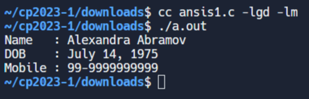
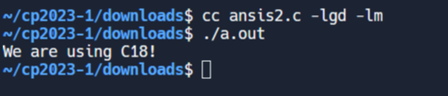
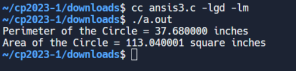
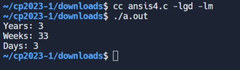
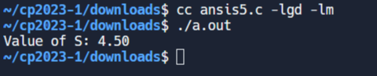
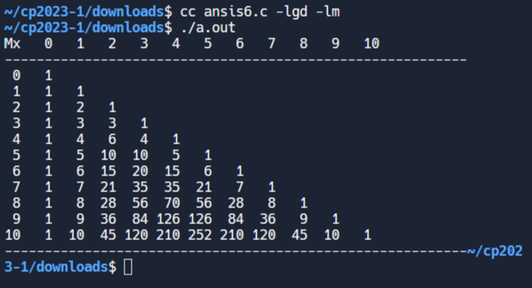
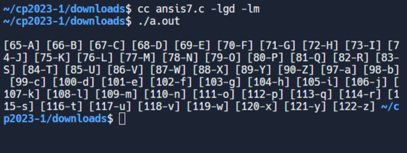
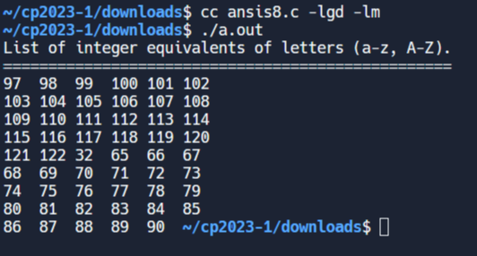
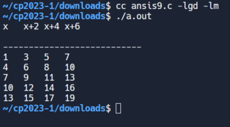
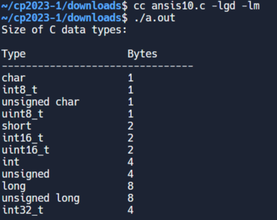

About <<
Previous Next >> c_ex
ANSIC
1.
#include <stdio.h>
int main()
{
// Print Name
printf("Name : Alexandra Abramov\n");
// Print Date of Birth
printf("DOB : July 14, 1975\n");
// Print Mobile Number
printf("Mobile : 99-9999999999\n");
// Indicate successful execution
return(0);
}

2.
#include <stdio.h>
int main(int argc, char** argv) {
// Check for C standard version
#if __STDC_VERSION__ >= 201710L
printf("We are using C18!\n");
#elif __STDC_VERSION__ >= 201112L
printf("We are using C11!\n");
#elif __STDC_VERSION__ >= 199901L
printf("We are using C99!\n");
#else
printf("We are using C89/C90!\n");
#endif
// Indicate successful execution
return 0;
}

3.
#include <stdio.h>
int main() {
int radius; /* Variable to store the radius of the circle */
float area, perimeter; /* Variables to store the area and perimeter of the circle */
radius = 6; /* Assigning a value to the radius */
/* Calculating the perimeter of the circle */
perimeter = 2 * 3.14 * radius;
printf("Perimeter of the Circle = %f inches\n", perimeter);
/* Calculating the area of the circle */
area = 3.14 * radius * radius;
printf("Area of the Circle = %f square inches\n", area);
return(0);
}

4.
#include <stdio.h>
int main()
{
int days, years, weeks;
days = 1329; // Total number of days
// Converts days to years, weeks and days
years = days/365; // Calculate years
weeks = (days % 365)/7; // Calculate weeks
days = days - ((years*365) + (weeks*7)); // Calculate remaining days
// Print the results
printf("Years: %d\n", years);
printf("Weeks: %d\n", weeks);
printf("Days: %d \n", days);
return 0;
}

5.
#include <stdio.h>
int main() {
float S = 0;
int i;
// Loop to calculate the sum
for(i=1; i<=50; i++) {
S += (float)1/i;
}
// Print the result
printf("Value of S: %.2f\n", S);
return 0;
}

6.
#include<stdio.h>
#define MAX 10
int main() {
int n, a, bi_nom;
// Print header
printf("Mx ");
for (n = 0; n <= 10; ++n)
printf("%d ", n);
printf("\n----------------------------------------------------------\n");
n = 0;
do {
a = 0, bi_nom = 1;
printf("%2d", n);
while (a <= n) {
if (n == 0 || a == 0)
printf("%4d", bi_nom);
else {
bi_nom = bi_nom * (n - a + 1) / a;
printf("%4d", bi_nom);
}
a = a + 1;
}
printf("\n");
n = n + 1;
} while (n <= MAX);
// Print footer
printf("----------------------------------------------------------");
return 0;
}

7.
#include <stdio.h>
#define N 10
int main() {
char chr;
printf("\n");
// Loop through ASCII values from 65 ('A') to 122 ('z')
for (chr = 65; chr <= 122; chr = chr + 1) {
// Exclude characters between 'Z' and 'a'
if (chr > 90 && chr < 97)
continue;
printf("[%2d-%c] ", chr, chr);
}
return 0;
}

8.
#include<stdio.h>
int main()
{
// Define a string containing lowercase and uppercase letters
char* letters = "abcdefghijklmnopqrstuvwxyz ABCDEFGHIJKLMNOPQRSTUVWXYZ";
int n;
// Print header
printf("List of integer equivalents of letters (a-z, A-Z).\n");
printf("==================================================\n");
// Loop through each character and print its integer equivalent
for(n=0; n<53; n++) {
printf("%d\t", letters[n]);
// Add a newline every 6 characters for better formatting
if((n+1) % 6 == 0)
printf("\n");
}
return 0;
}

9.
#include<stdio.h>
int main()
{
int x; // Declare variable x
// Print header for table
printf("x\tx+2\tx+4\tx+6\n\n");
printf("---------------------------\n");
// Loop to generate and print table values
for(x=1; x<=15; x+=3)
printf("%d\t%d\t%d\t%d\n", x, (x+2), (x+4), (x+6));
return 0; // Indicate successful program execution
}

10.
#include <stdio.h>
#include <stdint.h>
#include <inttypes.h>
#include <stdbool.h>
int main(void) {
// Display title
printf("Size of C data types:\n\n");
// Display column headers
printf("%-20s %-20s\n", "Type", "Bytes");
// Display separator line
printf("--------------------------------\n");
// Print size of various data types
printf("%-20s %lu\n", "char", sizeof(char));
printf("%-20s %lu\n", "int8_t", sizeof(int8_t));
printf("%-20s %lu\n", "unsigned char", sizeof(unsigned char));
printf("%-20s %lu\n", "uint8_t", sizeof(uint8_t));
printf("%-20s %lu\n", "short", sizeof(short));
printf("%-20s %lu\n", "int16_t", sizeof(int16_t));
printf("%-20s %lu\n", "uint16_t", sizeof(uint16_t));
printf("%-20s %lu\n", "int", sizeof(int));
printf("%-20s %lu\n", "unsigned", sizeof(unsigned));
printf("%-20s %lu\n", "long", sizeof(long));
printf("%-20s %lu\n", "unsigned long", sizeof(unsigned long));
printf("%-20s %lu\n", "int32_t", sizeof(int32_t));
printf("%-20s %lu\n", "uint32_t", sizeof(uint32_t));
printf("%-20s %lu\n", "long long", sizeof(long long));
printf("%-20s %lu\n", "int64_t", sizeof(int64_t));
printf("%-20s %lu\n", "unsigned long long", sizeof(unsigned long long));
printf("%-20s %lu\n", "uint64_t", sizeof(uint64_t));
printf("%-20s %lu\n", "float", sizeof(float));
printf("%-20s %lu\n", "double", sizeof(double));
printf("%-20s %lu\n", "long double", sizeof(long double));
printf("%-20s %lu\n", "bool", sizeof(bool));
// Add a newline for better output formatting
printf("\n");
// Indicate successful execution of the program
return 0;
}

About <<
Previous Next >> c_ex